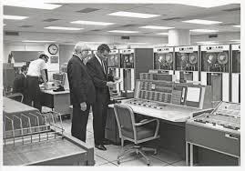

La revolucion de la programacion
1970 trajo consigo la creación de lenguajes como C y Pascal, que allanaron el camino para sistemas operativos y software de aplicación. El desarrollo inicial de C se llevó a cabo en los Laboratorios Bell de AT&T entre 1969 y 1973; según Dennis Ritchie, el periodo más creativo tuvo lugar en 1972. Se le dio el nombre C porque muchas de sus características fueron tomadas de un lenguaje anterior llamado B.

1980, lenguaje C++, que introdujo la programación orientada a objetos. Ha servido para la creación de aplicaciones básicas que se basan en Windows, generando interacciones con el usuario. Guía básica de documentos Asistente para el usuario.
1990 surge World Wide Web, impulsando la demanda de lenguajes web como HTML y JavaScript. Desde entonces, la diversidad de lenguajes y frameworks ha explotado, permitiendo la creación de aplicaciones web y móviles de vanguardia.